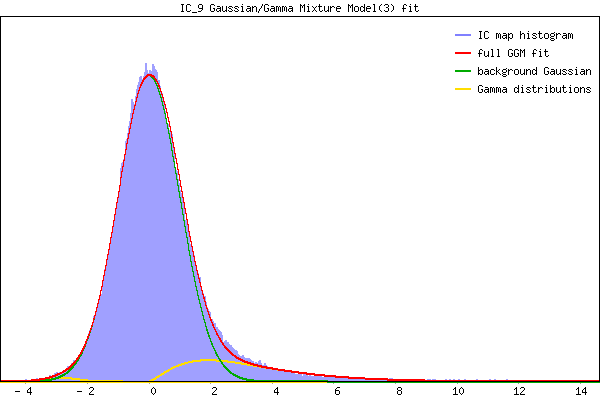

Component 9 Mixture Model fit


IC_9 Mixture Model fit
Means : 0.000000 4.847873 -2.663709
Vars : 1.000000 9.841097 0.561848
Prop. : 0.902640 0.089298 0.008062
This page produced automatically by MELODIC Version 3.15 - a part of FSL - FMRIB Software Library.